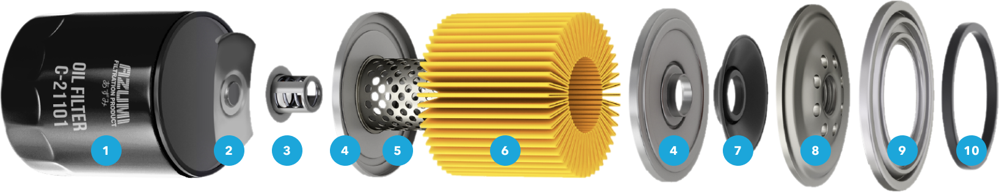
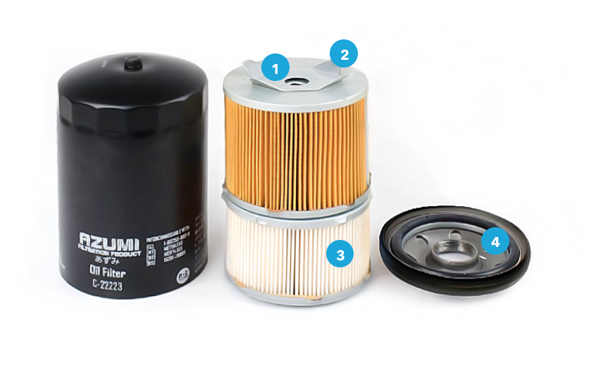
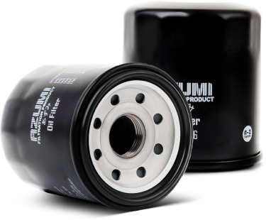
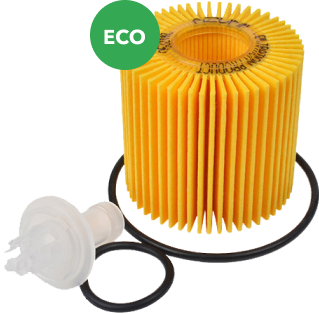

OIL FILTER
The purity of the oil entering the engine, determines its service life.
A high-quality filter not only removes contaminants from the oil, but does it in the most efficient way, without interfering with the flow throughout the entire life of the filter (during the entire period until the recommended replacement).
The efficiency of the filter consists of 2 components:
- Filter material quality
- Filtration area
The flat spring and M-shape of the filter material increases the filtration area with a very compact filter size.

- Durable steel filter housing
- Plate-shaped spring
- Anti-Drain Back Valve Keeps oil in filter to prevent engine from destructive “dry starts”. It stays flexible in extreme temperatures.
- Metal Mounting Plates Manufactured by pressing for increased precision and strength.
- Filter core Fixed by spot welding for additional strength.
- High quality M-shaped filter element Each filter model is different and corresponding to the given characteristics.
- Anti-drain valve
- Durable steel base
- By-pass Valve Prevention of "dry" operation of the engine in cases of high filter contamination or high oil viscosity at low temperatures.
- O-Ring Gasket Passed compression tests to ensure long life and no oil leaks.
Double-circuit oil filter for diesel

- By-pass valve (2.5 bar)
- Plate-shaped steel spring
- Valve
- Sealing retaining ring (with silicone braid)
ECO Oil Filters
AZUMI presents a wide range of internal oil filter elements, their replacement is possible without replacing the external elements of the filter construction, which can remain unreplaceable for the entire life of vehicles.


WHY ECO Oil Filters?
- Reducing the cost of maintenance
- Environmental protection through long-term use of the main filter elements
- Reducing the risk of installing the wrong filter design
- Convenient filter replacement